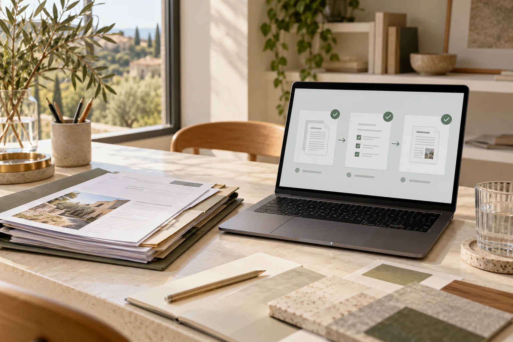

El punto de partida
Un proyecto comparte documentos entre varias personas. Las versiones y aprobaciones circulan por correo, carpetas y mensajes. Localizar qué está validado requiere consultar varios sitios.

Automatización documental
Solicitudes, recordatorios y documentos recurrentes en un flujo conectado. Diseñamos automatizaciones para reducir esperas y avanzar hacia entregas e hitos facturables, con las validaciones que necesita vuestro equipo.
Un proyecto comparte documentos entre varias personas. Las versiones y aprobaciones circulan por correo, carpetas y mensajes. Localizar qué está validado requiere consultar varios sitios.
¿En qué revisión se concentra la espera? ¿Quién necesita aprobar? ¿Qué ocurre con el plazo o la siguiente entrega cuando falta esa decisión?
Un flujo que recoge información, genera documentos recurrentes desde datos validados y activa avisos según el estado. Las aprobaciones que requieren criterio siguen en manos de las personas responsables. Partimos de vuestros documentos y herramientas.
Medimos el tiempo entre solicitud y recepción, los documentos pendientes y las correcciones repetidas. Contrastamos el cambio con la situación inicial y su efecto sobre la siguiente entrega.
Ejemplos para despachos de arquitectura
Un ejemplo ilustrativo del recorrido que puede implementar Orquivia.
Empezamos por escucharte
En 15 minutos situamos una tarea concreta y el resultado que buscas. No hace falta preparar una presentación ni explicar toda tu empresa.
Exploremos tu proyecto